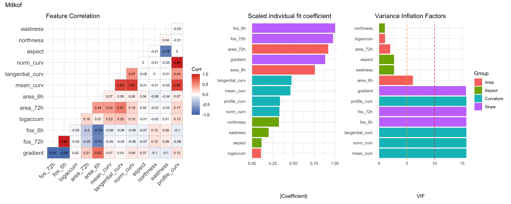
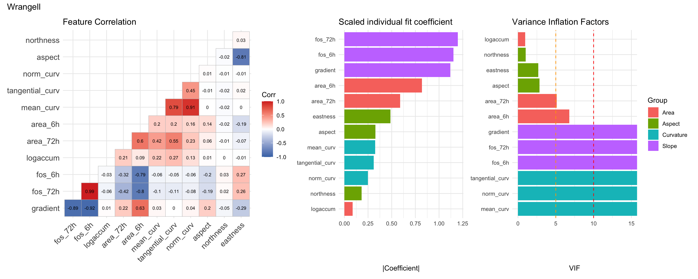
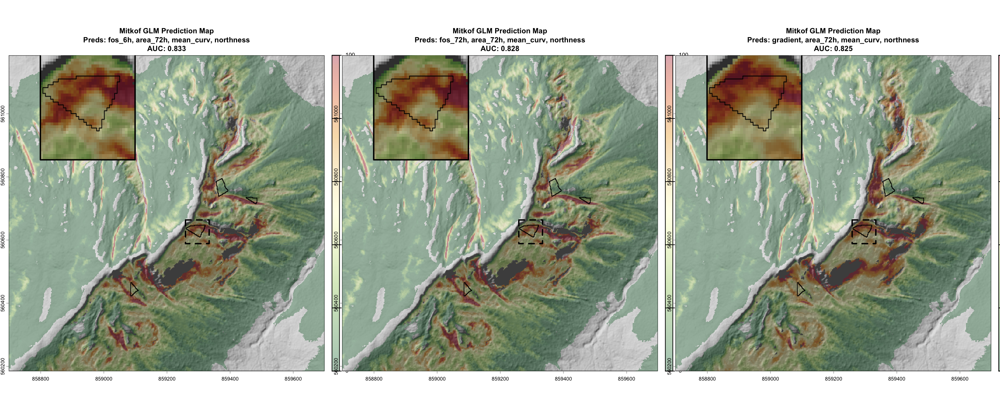
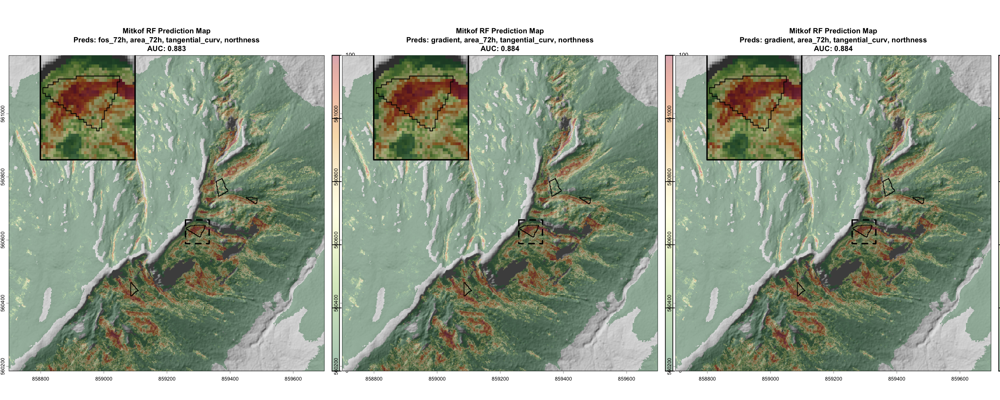
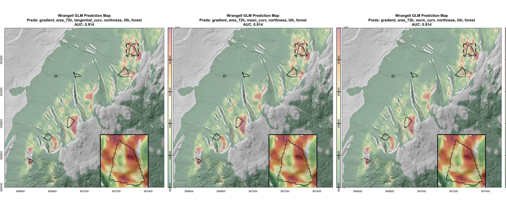
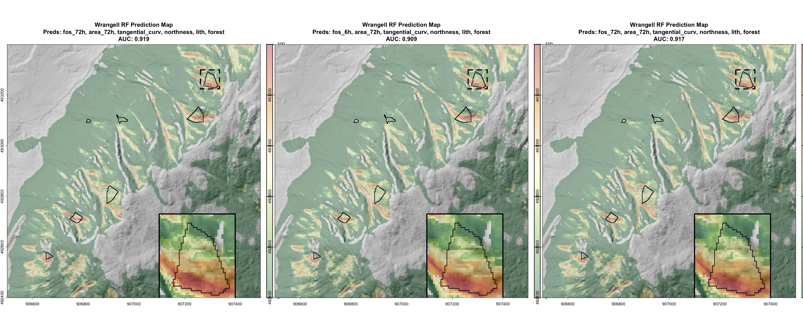

rstack ready: 21 layers
test_stack cropped to test extent
Code
wrangell <-load_rstack(wrangell)
Loading source rasters for Wrangell ...
rstack ready: 21 layers
test_stack cropped to test extent
Model evaluation
Model types
We evaluate three model types for landslide initiation mapping:
Logistic regression (GLM) fits a logistic curve to the binary outcome as a linear function of predictors. It assumes monotonic relationships between each predictor and landslide probability, which limits its ability to capture non-linear effects like the U-shaped relationship between aspect and stability. It has no hyperparameters beyond predictor selection.
Generalized Additive Model (GAM) extends logistic regression by fitting smooth splines to each predictor, allowing non-monotonic relationships. The number of basis functions k controls flexibility and can be tuned per predictor.
Random Forest (RF) uses an ensemble of decision trees and can capture complex interactions between predictors. Hyperparameters include the number of trees (num.trees) and minimum node size (min.node.size).
The figure below illustrates a logistic curve fitted to topographic gradient, providing a reference for how the GLM maps probabilities to a single predictor.
Before evaluating predictor combinations, we assess whether polygon-based categorical predictors (lith and forest) improve model performance. Soil polygons are excluded a priori — their classifications are explicitly tied to topographic slope and add little beyond what gradient and fos_* already capture.
GLM test-slice predictions with (right) and without (left) categorical predictors, for Wrangell (top) and Mitkof (bottom).
In Wrangell, adding lith and forest improves both quantitative performance (AUC) and map quality without introducing sharp polygon artifacts. In Mitkof, the categorical predictors create unnatural discontinuities and reduce AUC. For all remaining analyses, lith and forest are included for Wrangell but excluded for Mitkof.
Covariate diagnostics
With 13 quantitative covariates grouped into slope, area, curvature, and aspect families, using all simultaneously creates collinearity. We assess inter-predictor correlations, individual predictive strength, and variance inflation factors to guide predictor selection within each group.
Mitkof
Code
cov_check(mitkof)

In Mitkof, slope and curvature covariates are strongly correlated, leading to high VIFs when used together. We retain one predictor per group. fos_6h and tangential_curv perform best individually but all within-group predictors are considered. area_6h is excluded — it correlates better with slope metrics than with area. area_72h is a much stronger predictor than logaccum with an acceptably low VIF, so logaccum is excluded. northness has the highest individual coefficient and lowest VIF in the aspect group; eastness is excluded. Both aspect and northness are retained for non-linear models.
Wrangell
Code
cov_check(wrangell)

The Wrangell analysis mirrors Mitkof: slope and curvature covariates are correlated and area_6h is excluded. Unlike Mitkof, area_72h has a concerningly high VIF despite its predictive strength, so both area_72h and logaccum are evaluated. Raw aspect is a stronger predictor than on Mitkof, and all three aspect predictors (aspect, northness, eastness) are retained for evaluation.
Grid search
For each island we evaluate all combinations of retained predictors (one per group), using 4-fold spatial cross-validation to measure mean AUC. For RF models we also vary num.trees (300, 500) and min.node.size (5, 10). The top three models by AUC are plotted on the test slice for qualitative review.
Note: the narrative descriptions below were written for a specific run of the training data sampler. Results may shift slightly between runs due to random background point selection.
par(mfrow =c(1, 3))for (i in1:3) { formula <-as.formula(paste("label ~",paste(strsplit(mitkof$grid_glm$predictors[i], ", ")[[1]], collapse =" + ")))map_test_pred(glm_fit(formula, mitkof$df), mitkof)}

The top GLM models differ only in slope metric. Both factor-of-safety metrics (fos_6h, fos_72h) produce nearly identical maps; gradient yields a slightly different spatial pattern. We advance fos_6h (rank 1).
GAM models outperform GLMs (higher mean AUC, lower SD). All top models use fos_72h and area_72h; they differ in curvature and aspect metrics. The model using tangential_curv and aspect (rank 3) produces the smoothest map. We advance that combination.
par(mfrow =c(1, 3))for (i in1:3) { formula <-as.formula(paste("label ~",paste(strsplit(mitkof$grid_rf$predictors[i], ", ")[[1]], collapse =" + ")))map_test_pred(rf_fit(formula, mitkof$df, mitkof$grid_rf$ntrees[i], mitkof$grid_rf$min_nodes[i]), mitkof)}

RF models have the lowest AUC and produce noisy, pixelated maps. All top models use min.node.size = 10, area_72h, tangential_curv, and northness. We advance rank 1 for the final comparison.
The GAM using fos_72h, area_72h, tangential_curv, and aspect produces the smoothest map and the best AUC. The RF map is too noisy for operational use. We select the GAM as the final Mitkof initiation model.
par(mfrow =c(1, 3))for (i in1:3) { formula <-as.formula(paste("label ~",paste(strsplit(wrangell$grid_glm$predictors[i], ", ")[[1]], collapse =" + ")))map_test_pred(glm_fit(formula, wrangell$df), wrangell)}

The best GLM models all use gradient and area_72h, differing only in curvature and aspect metrics. Maps are visually indistinguishable. We advance rank 1 (tangential_curv, northness).
Top GAM models switch to fos_72h and all use tangential_curv. They differ in area and aspect metrics but produce indistinguishable maps. We advance rank 1 (area_72h, northness).
par(mfrow =c(1, 3))for (i in1:3) { formula <-as.formula(paste("label ~",paste(strsplit(wrangell$grid_rf$predictors[i], ", ")[[1]], collapse =" + ")))map_test_pred(rf_fit(formula, wrangell$df, wrangell$grid_rf$ntrees[i], wrangell$grid_rf$min_nodes[i]), wrangell)}

Top RF models use the same predictors (fos_72h, logaccum, tangential_curv, northness) with varying hyperparameters. Maps are noisy but less so than Mitkof. We advance rank 1.
Both GLM and GAM are smooth; the RF is too noisy. The GAM has better AUC across the full training dataset, but the GLM’s simplicity (no hyperparameters, directly interpretable coefficients) is appealing given that visual quality is comparable. We select the GLM as the final Wrangell initiation model.